العلاقة بين التغيرات الطيفية ووجود التذبذب شبه الدوري السفلي بالكيلوهرتز في ثنائي الأشعة السينية منخفض الكتلة ذي النجم النيوتروني 4U 163653
الملخص
لاءمنا طيف -keV لجميع أرصاد ثنائي الأشعة السينية منخفض الكتلة ذي النجم النيوتروني 4U 163653 المأخوذة بواسطة Rossi X-ray Timing Explorer باستخدام نموذج يتضمن مكوّنا للكمبتنة الحرارية. وجدنا أنه في الحالة المنخفضة/الصلبة يزداد دليل قانون القوة لهذا المكوّن، ، تدريجيا مع تحرك المصدر في مخطط اللون-اللون. وعندما يمر المصدر بانتقال من الحالة الصلبة إلى الحالة اللينة ينخفض على نحو مفاجئ؛ وبمجرد أن يصبح المصدر في الحالة اللينة يزداد مرة أخرى ثم ينخفض تدريجيا مع ازدياد ليونة طيف المصدر. وتعكس التغيرات في ، مع تغيرات درجة حرارة الإلكترونات، تغيرات العمق البصري في الهالة. ولا يظهر التذبذب شبه الدوري السفلي بالكيلوهرتز (kHz QPO) في هذا المصدر إلا في الأرصاد الواقعة أثناء الانتقال من الحالة الصلبة إلى الحالة اللينة، عندما يكون العمق البصري للهالة كبيرا وتتوقف تغيراته بقوة على موضع المصدر في مخطط اللون-اللون. وتتوافق نتائجنا مع سيناريو يعكس فيه التذبذب شبه الدوري السفلي بالكيلوهرتز نمطا كليا في النظام ينتج من الرنين بين القرص و/أو سطح النجم النيوتروني، والهالة المُكمبتِنة.
keywords:
التراكم، أقراص التراكم — النجوم: نيوترونية — الأشعة السينية: ثنائيات — النجوم: فردية: 4U 1636–53قُبل. استُلم؛ بصيغته الأصلية
1 المقدمة
تُستخدم أطياف الطاقة ومخططات اللون-اللون (CD) كثيرا لدراسة ثنائيات الأشعة السينية منخفضة الكتلة ذات النجوم النيوترونية (NS-LMXBs؛ مثلا، Hasinger & van der Klis, 1989). ويُعتقد أن تطور طيف الطاقة والمسارات على مخطط اللون-اللون تقودها تغيرات معدل تراكم الكتلة، وأنها تعكس تغيرات في بنية تدفق التراكم (مثلا، Hasinger & van der Klis, 1989; Méndez et al., 1999; Done et al., 2007). في الحالة المنخفضة/الصلبة يكون معدل التراكم منخفضا، ويكون القرص مبتورا عند أنصاف أقطار كبيرة (Gierliński & Done, 2002; Sanna et al., 2013; Plant et al., 2015, انظر مع ذلك Lin et al. 2007) ويهيمن على طيف الطاقة مكوّن صلب/مُكمبتَن يتبع قانون قوة. وعندما يزداد معدل التراكم في المصدر، يتناقص نصف قطر بتر القرص ويصل في النهاية إلى آخر مدار مستقر. وفي الحالة العالية/اللينة يكون معدل التراكم عاليا وتهيمن على طيف الطاقة مكوّنات لينة، قد تكون مزيجا من قرص التراكم والنجم النيوتروني.
تتغير الترددات المميزة (مثل التذبذبات شبه الدورية، QPOs) في أطياف كثافة القدرة (PDS) لهذه الأنظمة أيضا مع لمعان المصدر ومعدل تراكم الكتلة المستدل عليه (مثلا، Méndez et al., 1999; Belloni et al., 2005). وقد كُشفت تذبذبات شبه دورية بالكيلوهرتز (kHz) في كثير من ثنائيات الأشعة السينية منخفضة الكتلة ذات النجوم النيوترونية (للمراجعة انظر van der Klis, 2006, والمراجع الواردة هناك). وقد فُسِّر التذبذب شبه الدوري العلوي بالكيلوهرتز (وهو، من زوج التذبذبات شبه الدورية، الواقع عند التردد الأعلى) في هذه الأنظمة بدلالة الترددات المميزة (مثل التردد الكبلري) في قرص تراكم رقيق هندسيا (Miller et al., 1998; Stella & Vietri, 1998). وفي هذا السيناريو، تعكس تغيرات تردد التذبذب شبه الدوري العلوي بالكيلوهرتز تغيرات نصف القطر الداخلي للقرص، المدفوعة بمعدل تراكم الكتلة. وبالفعل، يرتبط تردد التذبذبات شبه الدورية العلوية بالكيلوهرتز بقوة مع اللون الصلب للمصدر (Méndez et al., 1999; Belloni et al., 2005; Belloni et al., 2007; Sanna et al., 2012).
اقتُرحت عدة نماذج لتفسير التذبذب شبه الدوري السفلي بالكيلوهرتز في هذه الأنظمة. اقترح Stella & Vietri (1998) نموذجا للسبق لينس-ثيرنغ، ترتبط فيه ترددات التذبذبات شبه الدورية بالترددات الأساسية للحركة الجيوديسية لتكتلات من الغاز حول الجسم المدمج. وفي نموذج الرنين النسبي (Kluzniak & Abramowicz, 2001; Lee et al., 2001; Kluźniak et al., 2004)، تظهر التذبذبات شبه الدورية بالكيلوهرتز عند ترددات تقابل اقترانا بين نمطين اهتزازيين في قرص التراكم. وفي نموذج تردد الخفقان (Miller et al., 1998)، ينشأ التذبذب شبه الدوري السفلي بالكيلوهرتز من التفاعل بين تردد دوران النجم النيوتروني والمادة المدارية عند الحافة الداخلية لقرص التراكم. ومع ذلك، لم يتمكن أي من هذه النماذج حتى الآن من تفسير جميع خصائص التذبذبات شبه الدورية بالكيلوهرتز تفسيرا كاملا (مثلا، Jonker et al., 2002; Belloni et al., 2005; Altamirano et al., 2012).
4U 1636–53 هو ثنائي أشعة سينية منخفض الكتلة ذو نجم نيوتروني يُظهر انتقالات منتظمة بين الحالات بدورة مقدارها 40 يوم (e.g., Belloni et al., 2007)، مما يجعله مصدرا ممتازا لدراسة الارتباطات بين خصائصه الطيفية والزمنية. وقد رُصد كامل نطاق الحالات الطيفية (الحالة المنخفضة/الصلبة، الحالة العالية/اللينة، الحالة الانتقالية) في هذا المصدر (Belloni et al., 2007; Altamirano et al., 2008). واكتشف Wijnands et al. (1997) وZhang et al. (1997) زوجا من التذبذبات شبه الدورية بالكيلوهرتز. وقد رُصد التذبذب شبه الدوري العلوي بالكيلوهرتز في حالات مختلفة. ويُظهر تردده المركزي ارتباطا واضحا مع اللون الصلب للمصدر (Belloni et al., 2007; Sanna et al., 2012). أما التذبذب شبه الدوري السفلي بالكيلوهرتز في 4U 1636–52 فلا يُكشف إلا عبر نطاق ضيق من قيم اللون الصلب (Belloni et al., 2007; Sanna et al., 2012). ولا تزال آلية انبعاث التذبذب شبه الدوري السفلي بالكيلوهرتز غير واضحة (مثلا، Berger et al., 1996; Méndez et al., 2001; Méndez, 2006)
حللنا أطياف الطاقة عريضة النطاق للمصدر 4U 1636–53 لاستقصاء تطور المكونات الطيفية والزمنية المختلفة بوصفه دالة في الحالة الطيفية للمصدر. وقد توفر مقارنة مكونات الاستمرار المختلفة في طيف الطاقة بخصائص التذبذبات شبه الدورية بالكيلوهرتز في الحالة نفسها قرينة مهمة لفهم أصل هذه التذبذبات وتطور هندسة تدفق التراكم. في §2 نصف الأرصاد واختزال البيانات وطرائق التحليل، وفي §3 نعرض نتائج التحليل الزمني والطيفي لهذه البيانات. وأخيرا، في §4 نناقش نتائجنا ونلخص استنتاجاتنا.
2 الأرصاد وتحليل البيانات
2.1 اختزال البيانات
حللنا كامل البيانات الأرشيفية (1576 أرصاد) من مصفوفة العداد التناسبي على متن Rossi X-ray Timing Explorer (RXTE) (PCA؛ Jahoda et al., 2006) وتجربة توقيت الأشعة السينية عالية الطاقة (HEXTE؛ Rothschild et al., 1998) لثنائي الأشعة السينية منخفض الكتلة ذي النجم النيوتروني 4U 1636–53. واختزلنا البيانات باستخدام حزمة heasoft بالإصدار 6.13. استخرجنا أطياف PCA من وحدة العداد التناسبي رقم 2 (PCU-2) فقط، لأن هذا كان الكاشف الأفضل معايرة والوحيد الذي كان قيد التشغيل دائما في جميع الأرصاد. ولاستخراج أطياف المصدر فحصنا أولا منحنيات الضوء لتحديد الاندلاعات السينية وإزالتها من البيانات. أما بالنسبة إلى بيانات HEXTE فقد ولّدنا الأطياف باستخدام العنقود B فقط، لأنه بعد يناير 2006 توقف العنقود A عن التأرجح ولم يعد قادرا على قياس الخلفية. واستخرجنا لكل رصد طيفا واحدا للأشعة السينية من PCA وطيفا واحدا من HEXTE، على التوالي. واستُخرجت أطياف الخلفية لـ PCA وHEXTE باستخدام أدوات RXTE القياسية pcabackest وhxtback، على التوالي. وبنينا ملفات استجابة الأجهزة لبيانات PCA وHEXTE باستخدام pcarsp وhxtrsp، على التوالي.
2.2 التحليل الزمني
حسبنا لكل رصد أطياف كثافة القدرة بفورييه (PDS) في نطاق keV كل 16 s من بيانات نمط الأحداث. ولهذا الغرض قسّمنا منحنيات الضوء إلى صناديق زمنية مقدارها 1/4096 s، بما يقابل تردد نايكويست قدره 2048 Hz. وقبل حساب تحويل فورييه أزلنا انقطاعات الكواشف، لكننا لم نطرح الخلفية ولم نطبّق أي تصحيح لزمن الموت قبل حساب PDS. وفي النهاية حسبنا PDS متوسطا لكل رصد مطبّعا كما في Leahy et al. (1983). ثم استخدمنا الإجراءات الموصوفة في Sanna et al. (2012) لكشف التذبذبات شبه الدورية وملاءمتها في كل PDS. وكشفنا تذبذبات شبه دورية بالكيلوهرتز في 581 من أصل 1576 رصد. وكشفنا التذبذب شبه الدوري السفلي بالكيلوهرتز في 403 من تلك الأرصاد البالغ عددها 583.
2.3 التحليل الطيفي
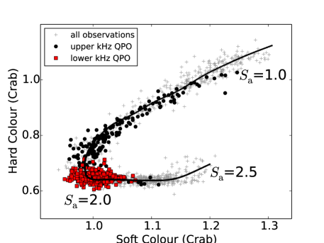
استخدمنا بيانات Standard-2 (بدقة زمنية 16-s و129 قناة تغطي كامل نطاق PCA keV) لحساب ألوان الأشعة السينية للمصدر (انظر Zhang et al., 2009, للتفاصيل). وعرّفنا اللونين الصلب واللين بوصفهما نسبتي معدلي العد في نطاقي keV و keV، على التوالي. نعرض مخطط اللون-اللون لجميع أرصاد 4U 163653 في الشكل 1، بنقطة واحدة لكل رصد من RXTE. وفي ذلك الشكل وصفنا موضع المصدر في مخطط اللون-اللون بطول المنحنى المتصل (انظر، مثلا، Méndez et al., 1999)، مع تثبيت قيمتي و عند الرأسين العلوي الأيمن والسفلي الأيسر للمخطط، على التوالي.
للتحليل الطيفي للمصدر 4U 1636–53، استخدمنا حزمة xspec v12.7 (Arnaud, 1996). ولائمنا أطياف PCA وHEXTE في آن واحد ضمن المجالين 3.025.0 و25.0180.0 keV، على التوالي. وأدرجنا أثر الامتصاص بين النجمي باستخدام المكوّن phabs مع مقاطع عرضية من Balucinska-Church & McCammon (1992) ووفرة شمسية من Anders & Grevesse (1989)، وثبتنا كثافة العمود عند cm-2 (Sanna et al., 2013). وأضفنا إلى النموذج عاملا ضاربا لأخذ لايقينيات المعايرة بين PCA وHEXTE في الحسبان. وضبطنا هذا العامل على الوحدة لـ PCA وتركناه حرا لأطياف HEXTE.
اقتُرحت نماذج كثيرة لملاءمة أطياف ثنائيات الأشعة السينية منخفضة الكتلة المتراكمة ذات النجوم النيوترونية في الماضي (مثلا، Barret, 2001; Lin et al., 2007). ويتضمن معظم النماذج مكوّنين على الأقل: مكوّنا حراريا لينا يمثل الانبعاث من سطح النجم النيوتروني (أو طبقة الحد) ومن قرص التراكم، ومكوّنا صلبا مُكمبتَنا يمثل الانبعاث من هالة من الإلكترونات الحارة.
في الملاءمة الطيفية للمصدر 4U 1636–53 استخدمنا نموذج الاستمرار نفسه كما في Sanna et al. (2013)، الذين لاءموا بيانات XMM-Newton نزولا إلى 0.8 keV. واستخدمنا جسما أسود قرصيا متعدد الألوان (diskbb في xspec) لملاءمة الانبعاث الحراري من القرص، وجسما أسود وحيد درجة الحرارة (BB، وbbodyrad في xspec) لملاءمة الانبعاث الحراري من سطح النجم النيوتروني (أو طبقة الحد)، ونموذج كمبتنة، nthcomp، لملاءمة المكوّن المُكمبتَن (Zdziarski et al., 1996; Życki et al., 1999).
معلمات bbodyrad وdiskbb هي درجة حرارة الجسم الأسود، ، ودرجة الحرارة عند نصف قطر القرص الداخلي، ، وتطبيعاهما، على التوالي. أما معلمات nthcomp فهي دليل فوتونات قانون القوة التقاربي، ، ودرجة حرارة الإلكترونات في الهالة، ، ودرجة حرارة الفوتونات البذرية، ، والتطبيع. ويمكن أن تأتي الفوتونات البذرية إما من سطح النجم النيوتروني وطبقة الحد أو من قرص التراكم. حلل Sanna et al. (2013) أطياف ستة أرصاد للمصدر 4U 1636–53 مأخوذة بواسطة XMM-Newton وRXTE في وقت واحد. وجرّبوا كلا من المكوّن bbodyrad أو المكوّن diskbb مصدرا للفوتونات البذرية في nthcomp، وخلصوا إلى أن diskbb كان الخيار الأفضل. لذلك، اخترنا في هذا العمل diskbb مصدرا للفوتونات البذرية اللينة وربطنا درجة حرارة الفوتونات البذرية في nthcomp بدرجة حرارة مكوّن diskbb. وفي الملاءمات، قُيّدت قيمة بأن تكون أكبر من أو مساوية لـ 1.1 (Gierliński & Done, 2002; Sanna et al., 2013) وقُيّدت قيمة بأن تكون أكبر من أو مساوية لـ 2.5 keV (Gierliński & Done, 2002; Lyu et al., 2014)
من الملاءمات الأولية، كانت توجد دائما بقايا عريضة نسبيا بين 6 و7 keV في أطياف RXTE/PCA. وعلى الأرجح تعكس هذه البقايا وجود خط حديد في البيانات. وقد تأكد خط الحديد أيضا بأرصاد XMM-Newton وSuzaku (Sanna et al., 2013; Lyu et al., 2014). ثم أضفنا مكوّنا غاوسيا بعرض متغير إلى الطيف لملاءمة هذا الخط. وبسبب الدقة الطيفية المنخفضة لـ PCA (1 keV عند keV)، لا نستطيع تقييد القيمة المركزية للخط جيدا. لذلك ثبتنا الخط عند 6.5 keV في جميع ملاءماتنا.
عند ملاءمة بيانات مأخوذة في آن واحد من XMM-Newton وRXTE، وجد Sanna et al. (2013) أن درجة حرارة bbodyrad كانت keV، وظلت ثابتة تقريبا مع تحرك المصدر عبر مخطط اللون-اللون. كما وجدوا أن درجة الحرارة عند الحافة الداخلية لقرص التراكم تراوحت من 0.2 keV إلى 0.8 keV عندما انتقل المصدر من الحالة المنخفضة/الصلبة إلى الحالة العالية/اللينة. وبما أن PCA يمتد نزولا إلى 3 keV فقط، فإن و يصعب تقييدهما في وقت واحد. ولذلك تركنا في البداية حرا، واتباعا لنتائج Sanna et al. (2013) ثبتنا عند 1.7 keV. ثم كررنا التحليل مع تثبيت عند كل من هذه القيم: 1.5 و1.6 و1.8 و1.9 و2.0 keV.
من التحليل السابق وجدنا أن ، المرتبط بـ في nthcomp، لم يكن مقيدا جيدا أثناء الملاءمات. لذلك استوفينا قيمة على امتداد مخطط اللون-اللون باستخدام نتائج ملاءمة أطياف XMM-Newton–RXTE في Sanna et al. (2013). وقسمنا البيانات إلى 7 مجموعات بناء على قيم الخاصة بها: ، ، ، ، ، و. وفي كل مجموعة ثبتنا عند درجات الحرارة المستوفاة لقيم المساوية لـ 1.1 و1.3 و1.5 و1.7 و1.9 و2.1 و2.35، على التوالي. وفي هذه الحالة تركنا حرا أثناء الملاءمات.
3 النتائج
3.1 التطور الطيفي في الأشعة السينية
في الشكل 2 نعرض دليل فوتونات قانون القوة التقاربي، ، بوصفه دالة في في 4U 1636–53. وكانت قيمة المشار إليها في كل لوحة مثبتة أثناء الملاءمات. وعندما يتطور المصدر من الحالة الطيفية الصلبة إلى الحالة الانتقالية في مخطط اللون-اللون، تزداد قيمة من 1.0 إلى 2.0، ويزداد من 1.8 إلى 2.2 ويصبح طيف المصدر لينا. ومع انتقال المصدر عبر رأس مخطط اللون-اللون، ، يهبط بحدة إلى ، ويغطي المجال من إلى . وعندما يتحرك المصدر خارج الرأس إلى الجزء السفلي الأيمن من مخطط اللون-اللون يزداد إلى ، ثم ينخفض أخيرا عائدا إلى مع ازدياد إلى 2.5. ويتضح من جميع اللوحات أن يُظهر هبوطا معنويا عند ، بغض النظر عن القيمة التي نختارها لـ . وعلاوة على ذلك، عند القيم المنخفضة لـ ()، يُظهر تشتتا أكبر للقيم المنخفضة لـ . ويشير هذا على الأرجح إلى أن درجة حرارة الجسم الأسود الأدنى (مثل keV) تعطي ملاءمات أقل تقييدا نسبيا لنموذج الكمبتنة الحرارية في 4U 163653.
تعرض اللوحة العلوية اليسرى من الشكل 3 بوصفه دالة في عندما استخدمنا القيم المستوفاة لـ وتركنا حرا. والاتجاه في هذا الشكل مشابه للاتجاهات في الشكل 2. وفي اللوحة العلوية اليمنى من الشكل 3 نعرض درجة حرارة الإلكترونات، ، بوصفها دالة في . ومع تطور المصدر من الحالة الصلبة إلى الانتقالية، ثم إلى الحالة الطيفية اللينة، ينخفض أولا من keV إلى keV ثم يبقى ثابتا تقريبا.
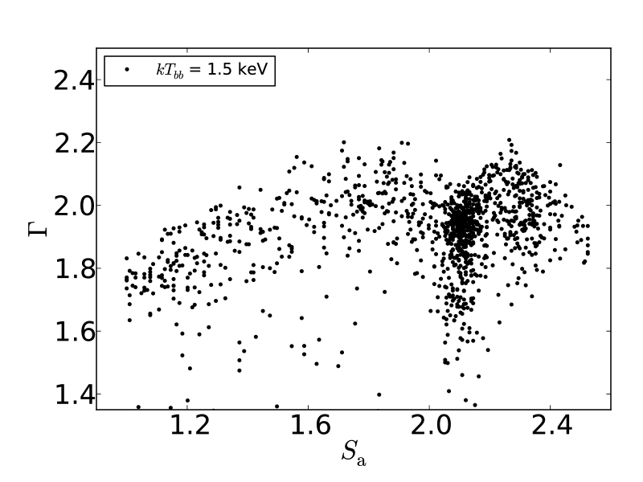
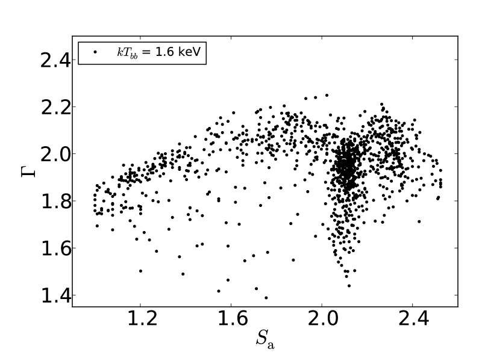
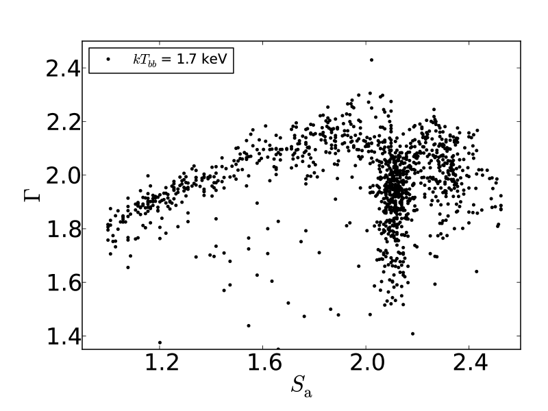
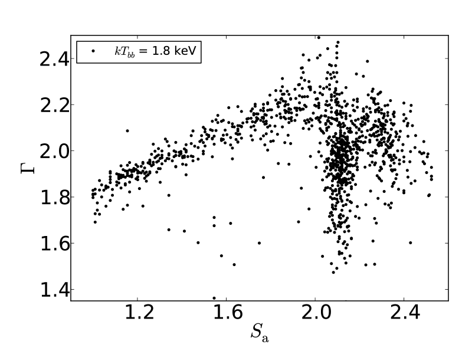
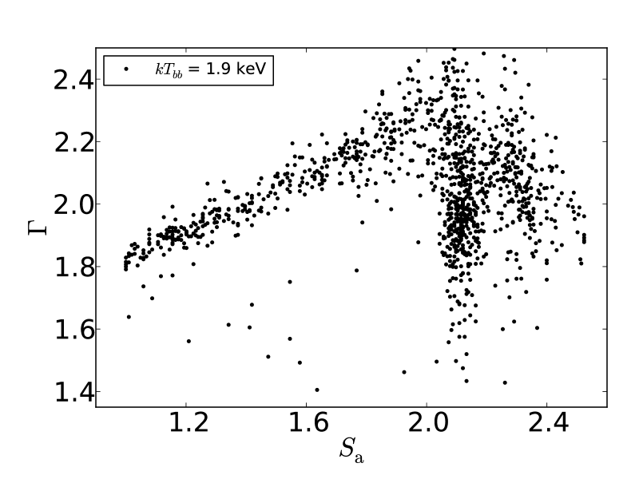
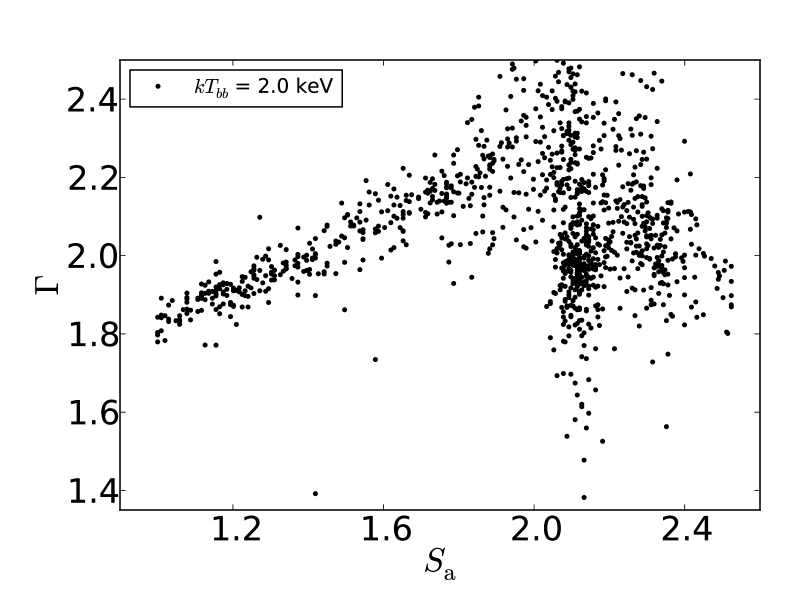
من أجل تصور تطور المكونات المفردة والطيف الكلي في حالات مختلفة، اخترنا أربعة أرصاد تغطي المجال الكامل لقيم . وتظهر الأرصاد الأربعة، Obs1 وObs2 وObs3 وObs4 ذات 1.05، 1.90، 2.15 و2.35، على التوالي، بدوائر حمراء ممتلئة في اللوحات العلوية من الشكل 3. وفي اللوحات الوسطى والسفلية من الشكل 3 نعرض أطياف نموذج PCA/HEXTE لهذه الأرصاد الـ 4. والمكونات الطيفية في الرسوم هي diskbb (أحمر/متقطع-منقّط)، وbbodyrad (وردي/منقّط)، وgaussian (أخضر/منقّط) وnthcomp (أزرق متقطع-ثلاثي التنقيط)، على التوالي. وتُعطى أفضل نتائج الملاءمة للأرصاد الأربعة في الجدول 1.
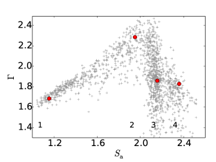
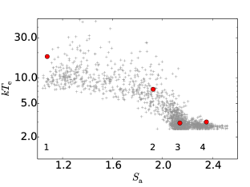
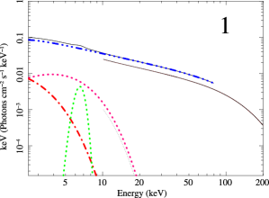
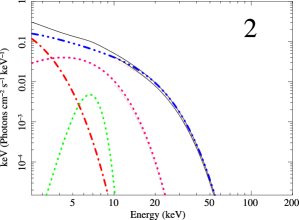
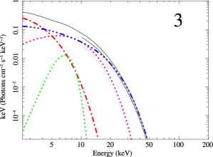
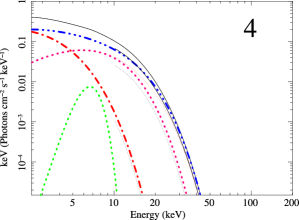
في اللوحة الوسطى اليسرى من الشكل 3 (Obs1) يكون المصدر في الحالة المنخفضة/الصلبة. ويهيمن على طيف الأشعة السينية عريض النطاق المكوّن الصلب/المُكمبتَن، nthcomp. وفي هذا الرصد يكون دليل قانون القوة ودرجة حرارة الإلكترونات keV
عندما يتطور المصدر من الحالة المنخفضة/الصلبة نحو الرأس في مخطط اللون-اللون، تزداد قيمة من 1.0 إلى 2.0، ويزداد من إلى ويصبح الطيف لينا (Obs2 في اللوحة اليمنى من الشكل 3). وتنخفض درجة حرارة الإلكترونات من keV إلى keV. ومقارنة بـ Obs1، يتضح أن مساهمة bbodyrad وdiskbb تزداد، وأن الانبعاث فوق 80 keV ينخفض انخفاضا ملحوظا.
عندما يكون المصدر في الحالة الانتقالية، ، تغطي قيمة مجالا واسعا بين 1.3 و2.5. ويكون الانبعاث من مكوّني diskbb و nthcomp متماثلا تقريبا دون 5 keV (اللوحة السفلية اليسرى من الشكل 3). ويكون مكوّن nthcomp مسطحا نسبيا لكن القطع عند الطاقة العالية يقع عند طاقة أدنى بكثير مما في Obs1. وتتوافق نتائجنا مع نتائج Sanna et al. (2013) لأطياف XMM-Newton–RXTE المشتركة (انظر الشكل 4 لديهم).
عندما يتحرك المصدر خارجا من الحالة الانتقالية إلى الحالة العالية/اللينة (Obs4)، وعلى نحو مشابه لما يعرضه Sanna et al. (2013) في الشكل 4 لديهم، ينخفض تطبيع diskbb ويصبح الانبعاث من diskbb أدنى من انبعاث nthcomp دون 5 keV.
| Component | Parameter | Obs. 1 | Obs. 2 | Obs. 3 | Obs. 4 |
|---|---|---|---|---|---|
| diskbb | (keV) | 0.30 | 0.60 | 0.75 | 0.80 |
| 550320 | 12070 | 115 35 | 16585 | ||
| bbody | (keV) | 1.330.12 | 1.750.28 | 2.050.27 | 1.72 |
| () | 1.30.8 | 3.82.4 | 2.9 | 6.2 | |
| nthcomp | 1.680.05 | 2.280.27 | 1.860.39 | 1.810.42 | |
| (keV) | 17.16.1 | 8.24.7 | 2.90.4 | 3.10.5 | |
| 0.170.02 | 0.120.04 | 0.310.09 | 0.190.07 |
3.2 الخصائص الطيفية في الأشعة السينية في الحالة الانتقالية
من الشكل 3 ومن المناقشة أعلاه، يتضح أن دليل فوتونات قانون القوة، ، في كثير من الأرصاد يُظهر هبوطا معنويا عندما يكون المصدر في الحالة الانتقالية. وبسبب التشتت الكبير لـ عندما 2 2.2 لا يكون اتجاه في هذه المنطقة من الرسم واضحا. لذلك رتبنا أولا البيانات في الشكل 3 بحسب وأعدنا تجميعها باستخدام خطوة مقدارها 0.025 و0.005 و0.02 في مجالات 1.01.8، 1.82.2 و2.2، على التوالي. ويظهر المتوسط الموزون لـ بوصفه دالة في في الشكل 4. ومن هذا الشكل يتضح أنه، مع ازدياد من إلى ، ينخفض فجأة من إلى ، حول ويزداد مرة أخرى مع من إلى ثم، مع ازدياد من إلى ، ينخفض من إلى . وفي الحالة الانتقالية يُظهر تشتتا كبيرا، لكن الرسم في الشكل 4 يبيّن أن يتغير تغيرا معنويا مع وأن تغير أكبر من التقلبات الإحصائية في البيانات. وقد يكون المجال الكبير لـ في الحالة الانتقالية راجعا إلى أن افتراضات النموذج (مثل قرص رقيق هندسيا، أو هالة كروية) لم تعد صالحة.
3.3 العلاقة بين ووجود التذبذب شبه الدوري السفلي بالكيلوهرتز
يعرض الشكل 5 التردد المركزي لجميع التذبذبات شبه الدورية بالكيلوهرتز المكتشفة في 4U 1636–53 بوصفه دالة في . وتمثل الدوائر الممتلئة (بالأسود) والمربعات الممتلئة (بالأحمر) الأرصاد ذات التذبذبات شبه الدورية العلوية والسفلية بالكيلوهرتز، على التوالي (انظر أيضا Sanna et al., 2013). ويُكشف التذبذب شبه الدوري العلوي بالكيلوهرتز عندما ، ويزداد تردده مع ازدياد . أما التذبذب شبه الدوري السفلي بالكيلوهرتز فلا يُكشف إلا عندما ، ويغطي تردده مجالا عريضا ضمن مجال ضيق لـ .
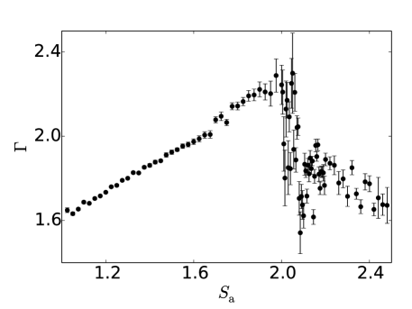
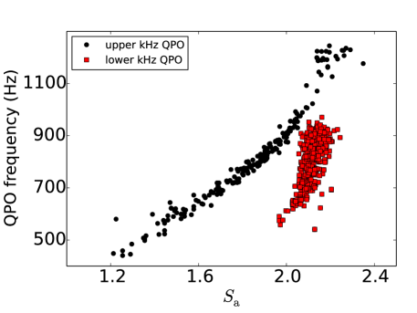
في اللوحة العلوية من الشكل 6 نرسم دليل فوتونات قانون القوة، ، بوصفه دالة في (البيانات نفسها المعروضة في الشكل 3). وتمثل الدوائر الممتلئة (بالأسود) والمربعات الممتلئة (بالأحمر) الأرصاد ذات التذبذبات شبه الدورية العلوية والسفلية بالكيلوهرتز، على التوالي. ومن المثير للاهتمام أن الأرصاد ذات التذبذبات شبه الدورية السفلية بالكيلوهرتز تقابل الأرصاد التي يُظهر فيها تشتتا كبيرا.
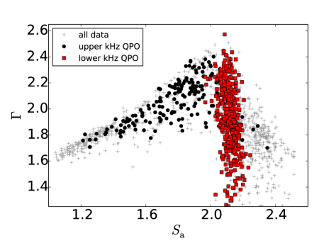
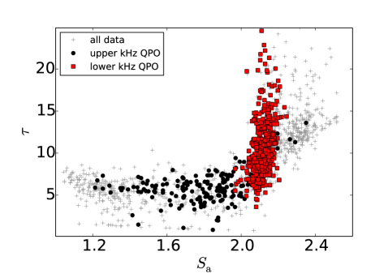
في حالة الكمبتنة في منطقة متناظرة كرويا يمكن التعبير عن كما يلي:
| (1) |
حيث إن هو العمق البصري للوسط، و هي درجة حرارة الإلكترونات في المنطقة المُكمبتِنة (Sunyaev & Titarchuk, 1980). وحسبنا لكل رصد ورسمناها بوصفها دالة في في اللوحة السفلى من الشكل 6. ومن هذا الشكل يتضح أن العمق البصري في الحالة المنخفضة/الصلبة يبقى تقريبا ثابتا عند مع ازدياد من إلى . وعندما يدخل المصدر الحالة الانتقالية، مع ، يزداد بحدة كبيرة مع . وفي الأرصاد ذات التذبذب شبه الدوري السفلي بالكيلوهرتز يغطي المجال من إلى . وقد وُجدت قيمة كبيرة لـ أيضا في الحالة اللينة لثنائيات أشعة سينية منخفضة الكتلة أخرى ذات نجوم نيوترونية (مثلا، 4U 160852 Gierliński & Done, 2002). ويدل التغير الكبير في (و) عبر منطقة صغيرة من مخطط اللون-اللون على أنه، في الحالة الانتقالية، إما أن الطيف يتغير تغيرا كبيرا أو أن النموذج لم يعد ملائما فيزيائيا. وحتى لو كان الاحتمال الأخير هو الصحيح، فلا يزال من المثير للاهتمام أن التذبذب شبه الدوري السفلي بالكيلوهرتز لا يُكشف إلا في هذا الجزء من المخطط.
4 المناقشة
لاءمنا أطياف الأشعة السينية في نطاق keV لجميع أرصاد RXTE لثنائي الأشعة السينية منخفض الكتلة ذي النجم النيوتروني 4U 1636–53 بنموذج يتضمن مكوّنا مُكمبتَنا. ثم درسنا العلاقة بين معلمات هذا المكوّن ووجود التذبذبات شبه الدورية بالكيلوهرتز بوصفها دالة في حالة المصدر، باستخدام المعلمة لقياس موضع المصدر في مخطط اللون-اللون. ووجدنا أنه، بينما يوجد التذبذب شبه الدوري العلوي بالكيلوهرتز في جميع حالات المصدر تقريبا، فإن التذبذب شبه الدوري السفلي بالكيلوهرتز لا يظهر إلا أثناء الانتقال من الحالة الصلبة إلى الحالة اللينة، في أرصاد يكون فيها العمق البصري للمكوّن المُكمبتَن عاليا نسبيا ويزداد بحدة شديدة مع ، من إلى .
في الحالة المنخفضة/الصلبة، يزداد دليل قانون القوة للمكوّن المُكمبتَن، ، تدريجيا من إلى مع ازدياد ليونة طيف المصدر وتحرك المصدر في مخطط اللون-اللون من الحالة الصلبة إلى الحالة الانتقالية. وفي هذه الأرصاد يرتبط ارتباطا جيدا مع اللون الصلب للمصدر ومع . وتُظهر أطياف كثافة القدرة لهذه الأرصاد التذبذب شبه الدوري العلوي بالكيلوهرتز فقط، ويكون تردد QPO مرتبطا أيضا بكل من اللون الصلب و. وقد أُبلغ عن ارتباطات مشابهة في ثنائيات أشعة سينية منخفضة الكتلة أخرى ذات نجوم نيوترونية (مثلا، 4U 0614+09، 4U 1608–52، 4U 1728–34، وAql X–1؛ Kaaret et al., 1998; Méndez et al., 1999; Méndez & van der Klis, 1999; Méndez, 2000).
هذه الارتباطات بين الخصائص الطيفية والزمنية في 4U 1636–53 تتوافق مع السيناريو الذي يتناقص فيه نصف قطر بتر قرص التراكم مع ازدياد التراكم الكتلي: فمع ازدياد لمعان الأشعة السينية للمصدر (ومعدل تراكم الكتلة عبر القرص المستدل عليه)، يتناقص نصف قطر البتر الداخلي لقرص التراكم (مثلا Done et al., 2007; Méndez et al., 1999, 2001; van Straaten et al., 2002; Altamirano et al., 2008) وتزداد درجة حرارة القرص (Shakura & Sunyaev, 1973)، ومن ثم التدفق اللين، في النظام. وهذا بدوره يعزز تبريد الهالة عبر تشتت كمبتون العكسي، مما يؤدي إلى انخفاض درجة حرارة الإلكترونات وزيادة العمق البصري للهالة (Gierliński & Done, 2002)، ويصبح طيف طاقة المصدر أكثر ليونة. وفي حالة 4U 1636–53 تدعم هذه الصورة أكثر ملاءمات أطياف XMM-Newton وRXTE (PCAHEXTE) في نطاق keV عبر مدى من الحالات الطيفية للمصدر (Sanna et al., 2013; Lyu et al., 2014). وأخيرا، إذا كان تردد التذبذب شبه الدوري العلوي بالكيلوهرتز يعكس التردد الكبلري عند الحافة الداخلية لقرص التراكم، فإن نصف قطر بتر أصغر ينتج تردد QPO أعلى.
لا يربط الوصف أعلاه إلا ديناميكيات (تردد) التذبذب شبه الدوري العلوي بالكيلوهرتز (على الأقل) بالخصائص الطيفية للمصدر، لكنه لا يعالج الآلية التي تحدد خصائص الانبعاث للتذبذبات شبه الدورية. فعلى سبيل المثال، إن الازدياد الحاد في سعة الجذر التربيعي المتوسط للتذبذبات شبه الدورية بالكيلوهرتز مع الطاقة (مثلا، Berger et al., 1996; Méndez et al., 2001; Gilfanov et al., 2003) يعني تعديلا في التدفق المنبعث يصل إلى % عند keV، حيث تكون مساهمة القرص مهملة (انظر الشكل 3). وتشير نتائجنا إلى أن الآليات المؤدية إلى انبعاث التذبذبين شبه الدوريين السفلي والعلوي بالكيلوهرتز ليست واحدة. وهذا مشابه لما اقترحه de Avellar et al. (2013) استنادا إلى اعتماد الإزاحات الزمنية للتذبذبات شبه الدورية بالكيلوهرتز في هذا المصدر على الطاقة والتردد. نكشف التذبذب شبه الدوري العلوي بالكيلوهرتز عبر جميع الحالات الطيفية للمصدر، باستثناء الحالة اللينة القصوى، في حين لا نكشف التذبذب شبه الدوري السفلي بالكيلوهرتز إلا في الانتقال من الحالة الصلبة إلى الحالة اللينة، عند ، حيث ينخفض فجأة من إلى .
ترتبط المعلمة ، مع درجة حرارة الإلكترونات، ، في مكوّن النموذج الطيفي nthcomp بـ ، وهو العمق البصري للهالة المسؤولة عن الانبعاث المُكمبتَن، عبر المعادلة (1). وبما أنه أثناء الأرصاد في الحالة الانتقالية، حيث يوجد التذبذب شبه الدوري السفلي بالكيلوهرتز، ينخفض فجأة (انظر، مثلا، اللوحة العلوية اليسرى من الشكل 3)، في حين يواصل انخفاضه تدريجيا (انظر اللوحة العلوية اليمنى من الشكل 3)، ففي سياق نموذج nthcomp تعكس التغيرات الجذرية في على الأرجح تغيرات كبيرة في العمق البصري للهالة. وتُظهر اللوحة السفلى من الشكل 6 أنه في الأرصاد ذات التذبذب شبه الدوري السفلي بالكيلوهرتز يكون عاليا ويزداد بحدة شديدة مع ، من إلى . وعلى الرغم من أننا كشفنا أيضا التذبذب شبه الدوري العلوي بالكيلوهرتز في عدة من هذه الأرصاد، فإن هذا QPO يوجد أيضا في أرصاد يكون العمق البصري للهالة فيها منخفضا بالمقارنة، ، ولا يتغير كثيرا مع .
نلاحظ، بالمناسبة، أن هبوط في الحالتين الانتقالية واللينة لا يناقض حقيقة أن طيف المصدر يلين عند . ففي الواقع، مع أن ينخفض في الحالتين الانتقالية واللينة إلى قيم مماثلة لتلك الموجودة في الحالة الصلبة، مما يوحي بتصلب عام للطيف، فإن أعلى بكثير في الحالة الصلبة منه في الحالتين الانتقالية واللينة، بحيث إن طيف المصدر في نطاق keV يلين فعلا مع ازدياد (قارن الشكل 3).
اقترح Lee et al. (2001) (انظر أيضا Lee & Miller, 1998) نموذجا تؤدي فيه حلقة تغذية راجعة بين الهالة ومصدر الفوتونات اللينة (القرص و/أو سطح النجم النيوتروني) إلى إثارة نمط كلي في النظام، بحيث تتذبذب درجة الحرارة والكثافة الإلكترونية في الهالة ودرجة حرارة مصدر الفوتونات اللينة تذبذبا مترابطا عند تردد معين، مما يولد تذبذبا شبه دوريا. ويمكن لهذا النموذج تفسير أطياف الطاقة لسعة الجذر التربيعي المتوسط والإزاحة الزمنية للتذبذب شبه الدوري السفلي بالكيلوهرتز (Berger et al., 1996; Vaughan et al., 1997) في ثنائي الأشعة السينية منخفض الكتلة ذي النجم النيوتروني 4U 1608–52. ويوفر هذا السيناريو أيضا إطارا لتفسير نتائجنا من حيث اقتران وتبادل طاقة فعال بين القرص والهالة. وبما أن تغيرات درجة حرارة الهالة في الأرصاد التي يوجد فيها التذبذب شبه الدوري السفلي بالكيلوهرتز صغيرة نسبيا (على الأقل مقارنة بالتغيرات النسبية في العمق البصري)، فمن المرجح أن مجال الترددات الذي يمتد عليه هذا QPO يعكس مجال الأعماق البصرية (كثافة الإلكترونات) في الهالة التي يُثار عندها الرنين.
نعرّف العمق البصري للهالة بأنه (Lee & Miller, 1998)، حيث إن هو حجم الهالة، و cm2 هو مقطع تومسون العرضي للإلكترون، و هي كثافة الإلكترونات. وإذا أخذنا 5 و20 بوصفهما القيمتين الحديتين لـ في ملاءماتنا (انظر الشكل 6)، فإن cm-3 و cm-3 لقيم في المجال بين 4 و15 km (Lee et al., 2001)، على التوالي. وتنسجم هذه القيم مع كثافة الإلكترونات النموذجية في هالة أنظمة النجوم النيوترونية أو الثقوب السوداء (مثلا، Nobili et al., 2000).
من المثير للاهتمام أنه في 4U 1636–53 يكون التردد الذي (i) يُكشف عنده التذبذب شبه الدوري السفلي بالكيلوهرتز في أغلب الأحيان (Belloni et al., 2005)، و(ii) يكون عنده عامل الجودة (، المعرّف بأنه تردد QPO مقسوما على العرض الكامل عند نصف القيمة العظمى) للتذبذب شبه الدوري السفلي بالكيلوهرتز هو الأعلى (Barret et al., 2006)، و(iii) يكون عنده الترابط بين الإشارتين منخفضة وعالية الطاقة هو الأعلى (de Avellar et al., 2013)، هو دائما Hz. وعلاوة على ذلك، أظهر de Avellar et al. (2016) حديثا أن إزاحة الطور بين الفوتونات منخفضة وعالية الطاقة في التذبذب شبه الدوري السفلي بالكيلوهرتز في 4U 1636–53 تكون أكبر ما يمكن عند ، وهو ما يقابل أيضا تردد QPO قدره Hz.
كل ما سبق يشير إلى أن هذا التردد يقابل نمطا اهتزازيا كليا لتدفق التراكم في هذا المصدر (انظر Lee et al., 2001). وقد يكون هذا النمط قابلا للإثارة عبر مجال واسع نسبيا من قيم خصائص الهالة (مثل و و)، ومن ثم عبر مجال من ترددات QPO، كما هو مرصود. ومن جهة أخرى، ستؤدي آليات إثارة هذا النمط الكلي للهالة وتخميده دورا في مجال الترددات وترابط QPO. وفي ورقة لاحقة (Ribeiro et al. 2017، قيد الإعداد) نناقش الارتباطات بين سعة الجذر التربيعي المتوسط للتذبذبات شبه الدورية والخصائص الطيفية للمصدر، وهي توفر دعما إضافيا لهذا السيناريو.
الشكر والتقدير
استفاد هذا البحث من بيانات حُصل عليها من High Energy Astrophysics Science Archive Research Center (HEASARC)، المقدمة من NASA’s Goddard Space Flight Center ومن NASA’s Astrophysics Data System Bibliographic Services. ونشكر Tomaso Belloni على تعليقاته ومناقشاته المفيدة، وWenfei Yu على قراءة المخطوطة بعناية والتعليق عليها. ويقر ER بالدعم المقدم من Conselho Nacional de Desenvolvimento Científico e Tecnológico (CNPq - Brazil)
References
- Altamirano et al. (2012) Altamirano D., Ingram A., van der Klis M., Wijnands R., Linares M., Homan J., 2012, ApJ, 759, L20
- Altamirano et al. (2008) Altamirano D., van der Klis M., Méndez M., Jonker P. G., Klein-Wolt M., Lewin W. H. G., 2008, ApJ, 685, 436
- Anders & Grevesse (1989) Anders E., Grevesse N., 1989, Geochim. Cosmochim. Acta, 53, 197
- Arnaud (1996) Arnaud K. A., 1996, in G. H. Jacoby & J. Barnes ed., Astronomical Data Analysis Software and Systems V Vol. 101 of Astronomical Society of the Pacific Conference Series, XSPEC: The First Ten Years. p. 17
- Balucinska-Church & McCammon (1992) Balucinska-Church M., McCammon D., 1992, ApJ, 400, 699
- Barret (2001) Barret D., 2001, Advances in Space Research, 28, 307
- Barret et al. (2006) Barret D., Olive J.-F., Miller M. C., 2006, MNRAS, 370, 1140
- Belloni et al. (2007) Belloni T., Homan J., Motta S., Ratti E., Méndez M., 2007, MNRAS, 379, 247
- Belloni et al. (2005) Belloni T., Méndez M., Homan J., 2005, A&A, 437, 209
- Berger et al. (1996) Berger M., van der Klis M., van Paradijs J., Lewin W. H. G., Lamb F., Vaughan B., Kuulkers E., Augusteijn T., Zhang W., Marshall F. E., Swank J. H., Lapidus I., Lochner J. C., Strohmayer T. E., 1996, ApJ, 469, L13
- de Avellar et al. (2016) de Avellar M. G. B., Méndez M., Altamirano D., Sanna A., Zhang G., 2016, MNRAS, 461, 79
- de Avellar et al. (2013) de Avellar M. G. B., Méndez M., Sanna A., Horvath J. E., 2013, MNRAS, 433, 3453
- Done et al. (2007) Done C., Gierliński M., Kubota A., 2007, A&A Rev., 15, 1
- Gierliński & Done (2002) Gierliński M., Done C., 2002, MNRAS, 337, 1373
- Gilfanov et al. (2003) Gilfanov M., Revnivtsev M., Molkov S., 2003, A&A, 410, 217
- Hasinger & van der Klis (1989) Hasinger G., van der Klis M., 1989, A&A, 225, 79
- Jahoda et al. (2006) Jahoda K., Markwardt C. B., Radeva Y., Rots A. H., Stark M. J., Swank J. H., Strohmayer T. E., Zhang W., 2006, ApJS, 163, 401
- Jonker et al. (2002) Jonker P. G., Méndez M., van der Klis M., 2002, MNRAS, 336, L1
- Kaaret et al. (1998) Kaaret P., Yu W., Ford E. C., Zhang S. N., 1998, ApJ, 497, L93
- Kluzniak & Abramowicz (2001) Kluzniak W., Abramowicz M. A., 2001, Acta Physica Polonica B, 32, 3605
- Kluźniak et al. (2004) Kluźniak W., Abramowicz M. A., Kato S., Lee W. H., Stergioulas N., 2004, ApJ, 603, L89
- Leahy et al. (1983) Leahy D. A., Darbro W., Elsner R. F., Weisskopf M. C., Kahn S., Sutherland P. G., Grindlay J. E., 1983, ApJ, 266, 160
- Lee & Miller (1998) Lee H. C., Miller G. S., 1998, MNRAS, 299, 479
- Lee et al. (2001) Lee H. C., Misra R., Taam R. E., 2001, ApJ, 549, L229
- Lin et al. (2007) Lin D., Remillard R. A., Homan J., 2007, ApJ, 667, 1073
- Lyu et al. (2014) Lyu M., Méndez M., Sanna A., Homan J., Belloni T., Hiemstra B., 2014, MNRAS, 440, 1165
- Méndez (2000) Méndez M., 2000, Nuclear Physics B Proceedings Supplements, 80, C1516
- Méndez (2006) Méndez M., 2006, MNRAS, 371, 1925
- Méndez & van der Klis (1999) Méndez M., van der Klis M., 1999, ApJ, 517, L51
- Méndez et al. (2001) Méndez M., van der Klis M., Ford E. C., 2001, ApJ, 561, 1016
- Méndez et al. (1999) Méndez M., van der Klis M., Ford E. C., Wijnands R., van Paradijs J., 1999, ApJ, 511, L49
- Miller et al. (1998) Miller M. C., Lamb F. K., Cook G. B., 1998, ApJ, 509, 793
- Nobili et al. (2000) Nobili L., Turolla R., Zampieri L., Belloni T., 2000, ApJ, 538, L137
- Plant et al. (2015) Plant D. S., Fender R. P., Ponti G., Muñoz-Darias T., Coriat M., 2015, A&A, 573, A120
- Rothschild et al. (1998) Rothschild R. E., Blanco P. R., Gruber D. E., Heindl W. A., MacDonald D. R., Marsden D. C., Pelling M. R., Wayne L. R., Hink P. L., 1998, ApJ, 496, 538
- Sanna et al. (2013) Sanna A., Hiemstra B., Méndez M., Altamirano D., Belloni T., Linares M., 2013, MNRAS, 432, 1144
- Sanna et al. (2012) Sanna A., Méndez M., Belloni T., Altamirano D., 2012, MNRAS, 424, 2936
- Shakura & Sunyaev (1973) Shakura N. I., Sunyaev R. A., 1973, A&A, 24, 337
- Stella & Vietri (1998) Stella L., Vietri M., 1998, ApJ, 492, L59
- Sunyaev & Titarchuk (1980) Sunyaev R. A., Titarchuk L. G., 1980, A&A, 86, 121
- van der Klis (2006) van der Klis M., 2006, Rapid X-ray Variability. pp 39–112
- van Straaten et al. (2002) van Straaten S., van der Klis M., di Salvo T., Belloni T., 2002, ApJ, 568, 912
- Vaughan et al. (1997) Vaughan B. A., van der Klis M., Méndez M., van Paradijs J., Wijnands R. A. D., Lewin W. H. G., Lamb F. K., Psaltis D., Kuulkers E., Oosterbroek T., 1997, ApJ, 483, L115
- Wijnands et al. (1997) Wijnands R. A. D., van der Klis M., van Paradijs J., Lewin W. H. G., Lamb F. K., Vaughan B., Kuulkers E., 1997, ApJ, 479, L141
- Zdziarski et al. (1996) Zdziarski A. A., Johnson W. N., Magdziarz P., 1996, MNRAS, 283, 193
- Zhang et al. (2009) Zhang G., Méndez M., Altamirano D., Belloni T. M., Homan J., 2009, MNRAS, 398, 368
- Zhang et al. (1997) Zhang W., Lapidus I., Swank J. H., White N. E., Titarchuk L., 1997, IAU Circ., 6541
- Życki et al. (1999) Życki P. T., Done C., Smith D. A., 1999, MNRAS, 309, 561